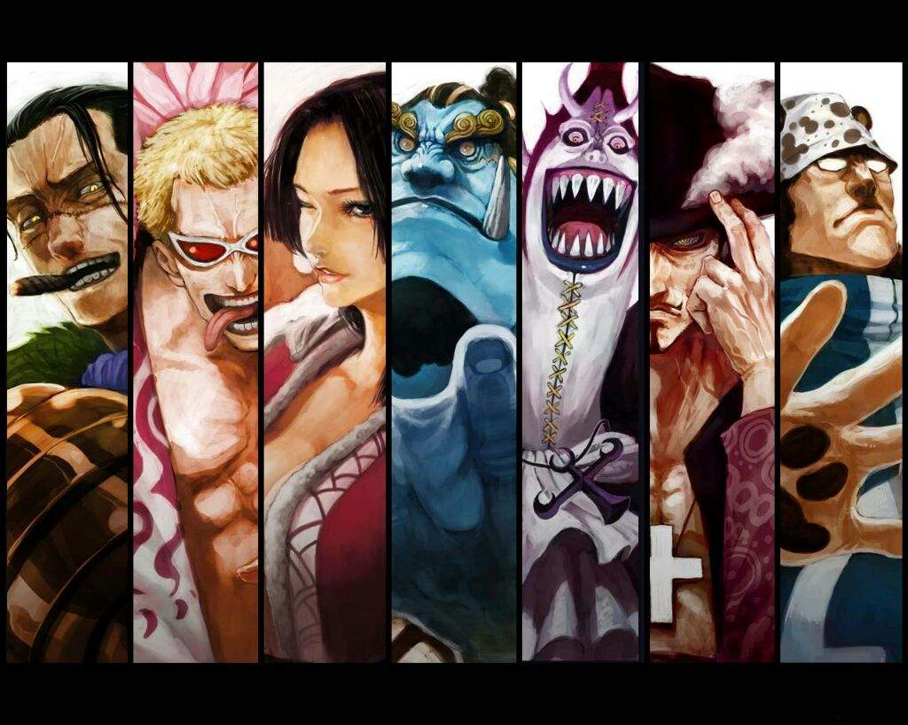

Seven Warlords of the Sea
Comand of Seven Warlords of the Sea or simply the Seven Warlords, were a selection of seven powerful and notorious pirates allied to the World Government. Collectively, they constituted one of the Three Great Powers that kept the world in balance. After two members (Crocodile and Donquixote Doflamingo) had their titles stripped for heinous public crimes, Marine Admiral Fujitora led a campaign to abolish the Seven Warlords system. He achieved this goal during the most recent Levely, as the council of rulers voted to abolish the system; the five remaining Warlords at the time immediately had their bounties unfrozen and became enemies of the World Government once again.